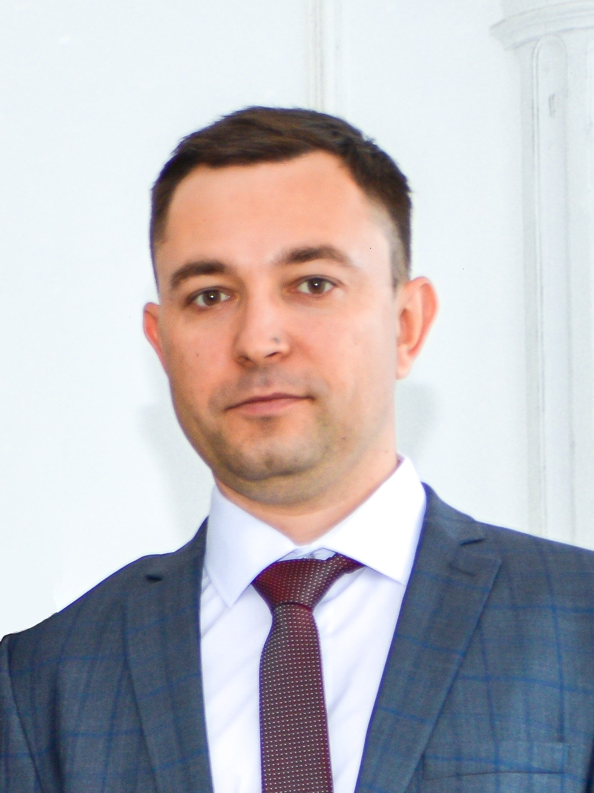

Enterprise Java разработчик |
Контакты:
Телефон: Telegram: t.me/KudinovValentin Эл.почта: kudinovvalentin@yandex.ru Портфолио:Github Languages: • Java • SQL • Javascript • HTML, CSS • XML Java Frameworks: • Java 8+ (Time API, Streams) • Spring (MVC, Security, Data JPA, Test, Boot) • Jakarta EE • JPA (Hibernate) • JUnit • Mockito • Rest Assured DataBase • PostgreSQL • MySQL • Oracle DB • H2 • HSQLDB Java EE • JSF, JSP, EL, Servlets • JDBC, Java Persistence API, JTA • Apache Tomcat • Wildfly HTML, CSS, JS Frameworks • Bootstrap (css/js) • Datatables • jQuery Технологии • AJAX Architectural style • REST Английский: • A2 Инструменты • Git, Maven, IntelliJ IDEA, Postman, Visual Studio Code, Soap UI |
|
|  |
Кудинов Валентин39 лет |
|
Опыт(2021/08 - по н.в.) - Java Developer, разработчик ПО в Magenta Technology 1. Разработка приложения для Сбера (приложение для организации поездок сотрудников банка) Cтэк Spring (MVC, Security, Data JPA)/ REST / Java 11 / Kafka / Docker. 2. Разработка web приложения для корпоративного портала. Cтэк Jakarta EE (wildfly)/ REST / Java 8 / Artemis / Docker / MySQL DB. 3. Разработка приложения для Ренессанс Кредит Банка (приложение для организации работы курьеров по доставке банковских продуктов) Cтэк Jakarta EE (wildfly)/ REST / Java 8 / Artemis / Docker / Spring (MVC, Security, Data JPA) / Oracle DB. 4. Разработка приложения для Сбера (Внутренний продукт CRM для работы с клиентами по оформлению кредитных предложений) Cтэк Java 11 / Spring Boot / WebFlux / Grafana / Prometheus / GRPC / GRAPHQL / Openshift / Kafka / PostgresQL / REST / Микросервисная архитектура. Стэк Сбера Data-Space / Kapellmeister (2020/04 - 2021/05) - Разработка приложения –Голосование за рестораны» (Java Online Projects) Cтэк Maven/ Spring (MVC, Security, Data JPA)/ REST (Jackson)/ Java 8 Stream
API. Реализация клиента на Bootstrap (css/js), datatables, jQuery + plugins.
(04/2020- 05/2021) - Участие в разработке приложения Spring/JPA Enterprise (Java Online Projects)
Cтэк HTML, CSS, Javascript Ссылка на сайт (08/2021 – по наст. время) Java Developer, разработчик ПО в Magenta Technology (02/2015 – 08/2021) Старший инженер-конструктор (разработка проектов электроснабжения) (09/2011 - 02/2015) Инженер сектора проектирования (06/2011 - 09/2011) Инженер проектно-сметного отдела (02/2009 - 05/2011) Инженер ПТО (11/2007 - 01/2009) Инженер ПТО (09/2006 - 11/2007) Инженер ПТО Курсы
(04/2020- 05/2021) - "Java-разработчик корпоративных приложений - Topjava " |
||